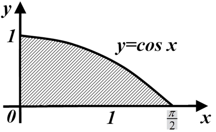

Приклад
Головна

Знайти площу фігури, обмеженої лініями
\(S=F\left(\dfrac{\pi}{2} \right)-F(0)=sin\dfrac{\pi}{2}-sin(0)=1-0=1 \)
Розв'язання
Для
\(y=cos(x)\)
одна з первісних є
\(F(x)=sin(x)\)
Тоді
\(Відповідь: S = 1.\)
< Назад
Вперед >